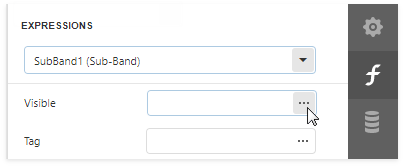
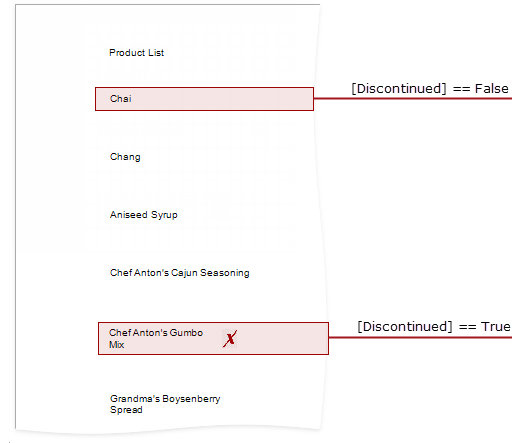

Conditionally Change a Band's Visibility
This topic describes how to change report band visibility.
Set a band's Visible property to an expression to conditionally change the band's visibility based on a field's value or a parameter.
The report created in this tutorial contains two Detail sub-bands with different report controls. These sub-bands are used to display discontinued and current products.

The steps below demonstrate how to change a band's visibility based on a field's value.
Select the required band and switch to the Expressions panel. Click the Visible property's ellipsis button.

In the invoked Expression Editor, specify the required expression.

Here, the [Discontinued] == false expression is set for the SubBand1 and the [Discontinued] == true expression for the SubBand2. These expressions specify the Visible property based on the Discontinued data field's value.
The Preview below displays how changes to band visibility influence the Product List. The SubBand1 is used to display products that have the Discontinued field set to false, and the SubBand2 is used to display discontinued products.
